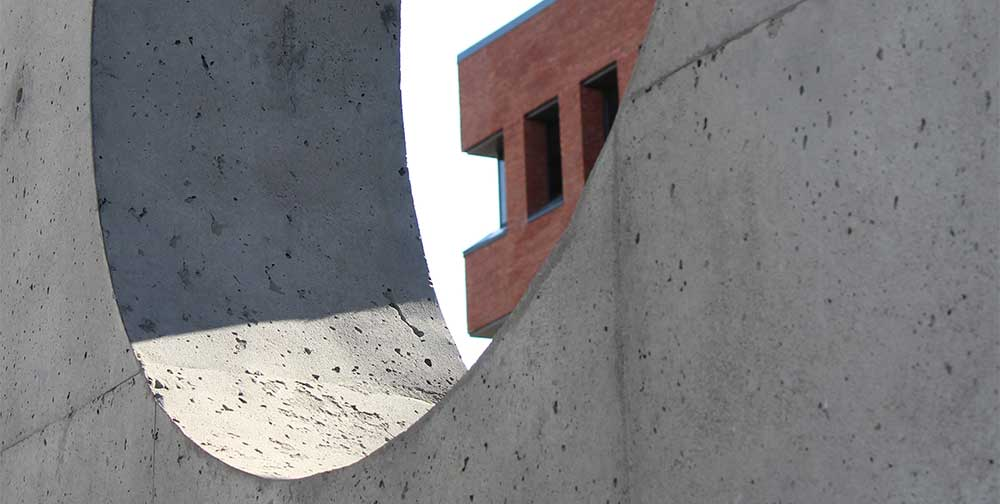
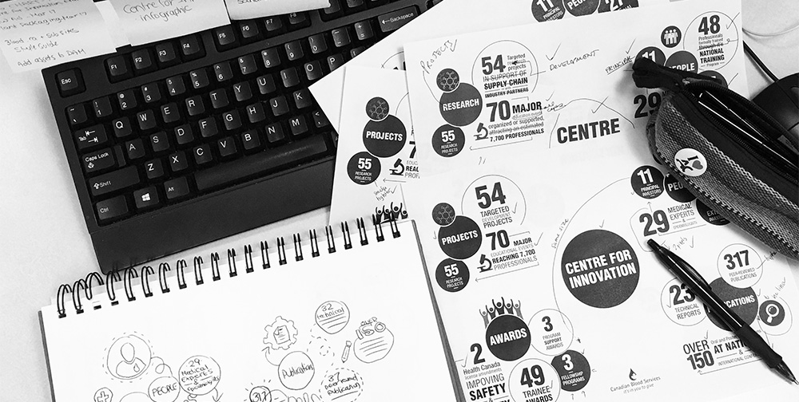
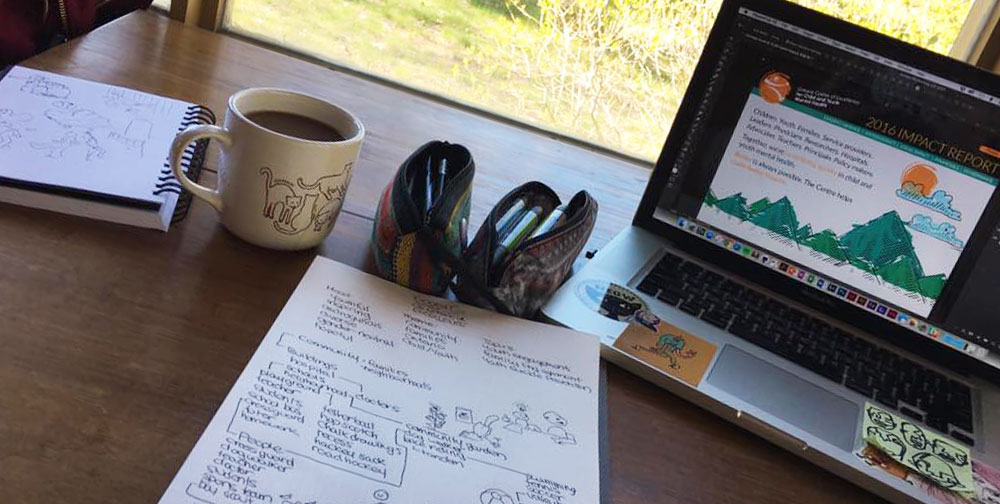
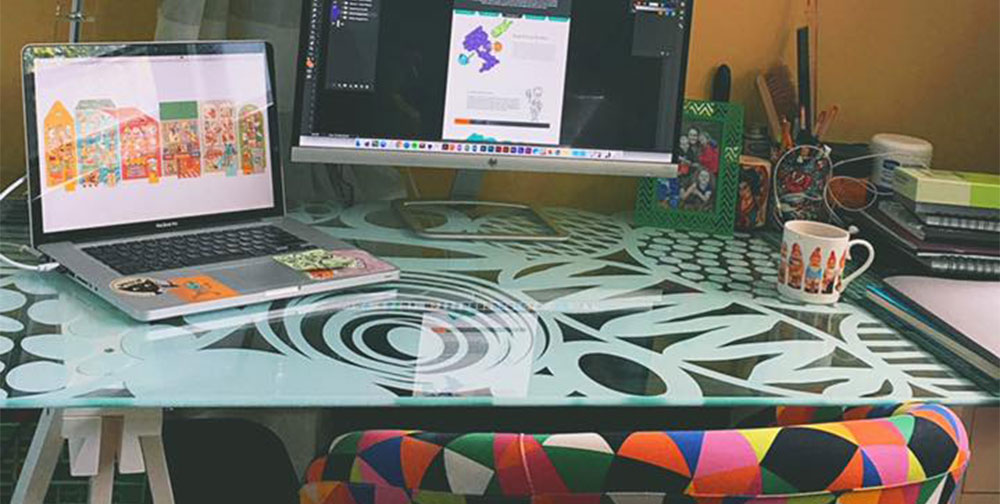

through design; I challenge the status quo, and evoke positive change in the world.
through design; I challenge the status quo, and evoke positive change in the world.
hi there! i'm Lore.
getting into graphic design didn’t come naturally. i have a background in fine art and concept art; and after not finding professional success after pursuing these paths, I always told myself I couldn’t have a career being creative.
my first mistake was thinking a career being creative needed to surround fine art.
it was 3 in the morning on the first day of school, when i applied to the graphic design program at Algonquin College. i had applied to a program in finance, and knew i'd made the wrong choice. i was very late—and very lucky—but after a look at the portfolio i had less than a day to prepare, i found myself in a community that would change my life.


i began my studies in graphic design at Algonquin College in 2015. i will graduate the program spring 2018. i also have certificates in fine art and concept art.
my internship was at Canadian Blood Services was in the winter/spring of 2016. i worked in the head office, working under the lead graphic designer.
i was hired on as a graphic designer in the spring of 2017, right after my internship at Canadian Blood Services. i still work with Creatrix part time during my studies.
since my first year in school, i have been taking on clients independently. everything from marketing material, to content content writing.

click to see full studies.